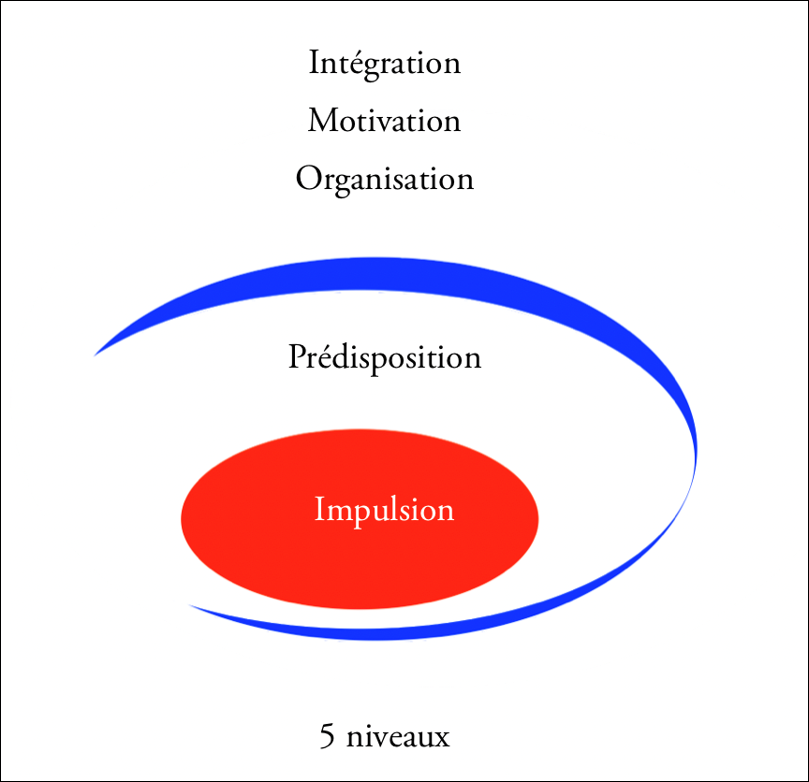
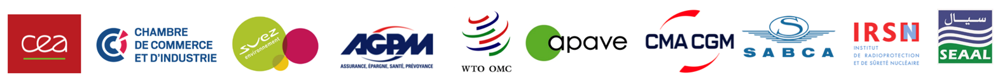

Un guide, une méthodologie,
une formation.
Major Exchanges met à disposition des équipes RH des grilles interactives, un guide d'entretien structuré et la formation associée — pour étudier la personnalité et les motivations sous une forme simple, conviviale et valorisante. Conçu pour DRH, cabinets de recrutement, coachs et consultants.
Une étude complète
en trois étapes.
Du brief à la restitution, Major Exchanges structure votre process d'étude de la personnalité.
Définir les requis
Vous paramétrez les 48 critères comportementaux et motivationnels attendus pour le poste ou la mission. Le cadre de l'étude est posé en amont, sur des bases objectives.
15 min · Côté RHLe candidat passe le questionnaire
Passation en ligne sécurisée, à son rythme. L'IA Major Exchanges produit une pré-analyse des prédispositions comportementales, prête à être recoupée en entretien.
45 min · Côté candidatEntretien guidé & livrable
Vous menez l'entretien à l'aide du guide structuré. Vous recevez la rosace comportementale, l'analyse écrite et la matrice de validation des 48 requis.
1h · Côté RH
Recrutement, coaching,
management.
Une même méthodologie s'adapte à trois contextes RH distincts. Chaque équipe y trouve un cadre objectif et des livrables actionnables.
Recrutement & mobilité
Évaluer l'adéquation poste-personne sur 48 critères paramétrés. Réduire l'interprétation subjective lors des entretiens d'évaluation et des décisions de mobilité interne.
Voir la méthodologie →Coaching & mentoring
Cartographier les leviers de développement d'un bénéficiaire. Disposer d'un support d'entretien qui structure la relation entre coach et coaché.
Voir les outils →Management & synergie d'équipe
Lire les modes de fonctionnement individuels pour construire des équipes complémentaires. Anticiper les points de friction, valoriser les différences.
Pour les experts →
Validé dans
des milieux
exigeants.
La méthodologie Major Exchanges a été utilisée et validée dans des contextes professionnels, cliniques, militaires et culturels exigeants. Le MBTI a servi de référence comparative lors de la phase d'étalonnage.
Validations principales : OTAN (Luxembourg) et Centre de psychologie de Lafayette (USA). Méthodologie utilisée par l'OMC, le CEA, l'IRSN, l'ASN, la DAM et plusieurs grands comptes français et internationaux. Quatre prix d'innovation reçus entre 2011 et 2014, en France et en Allemagne, pour l'optimisation du process de management interculturel.

Au-delà du test, une étude. Le guide d'entretien Major Exchanges a été conçu pour aller au-delà de toute image préconstruite et révéler les modes de fonctionnement réels d'une personnalité.
Chaque entretien produit une lecture multi-niveaux — intégration, motivation, organisation, prédisposition et impulsion — synthétisée dans un livrable structuré (rosace, analyse écrite, matrice des 48 requis).
Une analyse
sur cinq niveaux.
De l'intégration à l'impulsion, Major Exchanges propose une approche structurée en cinq niveaux articulés autour d'un moteur central — une lecture multi-dimensionnelle rare sur le marché de l'évaluation comportementale RH.
Intégration
L'ancrage de la personne dans son environnement professionnel — capacité à s'inscrire dans un cadre, des règles, des relations.
Motivation
Les leviers profonds qui soutiennent l'engagement — les sources d'énergie qui orientent l'action dans la durée.
Organisation
La structuration de l'action : méthode, priorités, gestion du temps, articulation des moyens et des fins.
Prédisposition
Les dispositions naturelles, les inclinations — les zones où la personne déploie spontanément ses capacités.
Impulsion
Le moteur central. La force qui met en mouvement les quatre autres niveaux et donne sa cohérence à l'ensemble.

Cinq niveaux · un moteur central : l'impulsion
Une lecture plus fine des modes de fonctionnement améliore la qualité du recrutement et de la mobilité interne — en objectivant l'adéquation entre une personne, ses motivations et son environnement de travail.
Utilisé là où
la rigueur n'est pas optionnelle.
